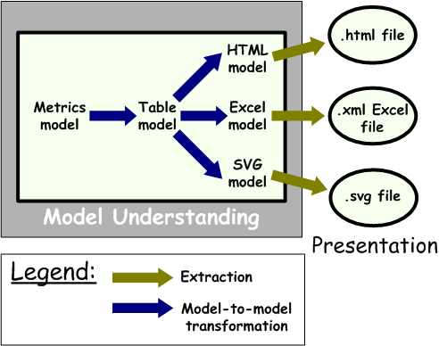
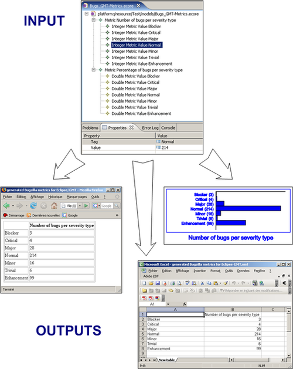

This generic tool is about building metrics visualizations in different formats ( HTML and Excel for tabular representations, SVG for graphical ones like bar charts and pie charts) from any metrics data stored into models that conform to the provided generic Metrics metamodel.
This tool is provided by INRIA AtlanMod and its development has been supported by the IST European MODELPLEX project (MODELing solution for comPLEX software systems, FP6-IP 34081).
The overall approach applied by this tool is summarized in the following figure:

The tool is composed of a set of ATL model-to-model transformations that implement the different steps of the visualization building. The input Metrics model is first transformed into a Table model that provides a simple tabular representation of the data. Models specific to different visualization formats (i.e. HTML, Excel and SVG models) are then built from the Table model. These generated models are finally extracted into software readable files.
We provide below some examples of the visualizations that can be produced using the tool from a given Metrics model:

This complete use case covers both the "Model Discovery" and "Model Understanding" phases. It is about discovering bugs information expressed in HTML format, building a Bugzilla model from this data, computing it in order to produce a Metrics model and finally building some visualizations of the generated metrics.
We provide here the links to all the metamodels which have been developped and/or used within this tool.
These metamodels are available resources that may be used within other tools or use cases, in other different contexts or for other purposes.
Each of them is provided in two different formats: Ecore and KM3.
| Ecore format | KM3 format |
|---|---|
| XML | XML |
| Metrics | Metrics |
| Table | Table |
| HTML | HTML |
| MS Office Excel SpreadsheetML | MS Office Excel SpreadsheetML |
| SVG | SVG |
Note that these metamodels are also available in other varied graphical and textual formats from the metamodel zoos.
All of the source code is stored in a public source repository, which you can access at:
You can also browse it through the Web interface.